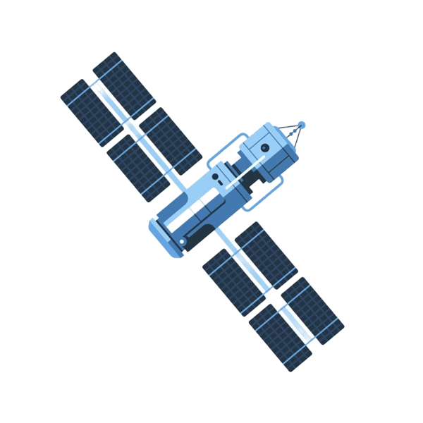

Марс — четверта планета від Сонця, відома як Червона планета через свій характерний рудуватий колір, який зумовлений оксидом заліза на поверхні. Він значно менший за Землю. Його діаметр приблизно 6 779 кілометрів, а маса — близько однієї десятої від земної. Атмосфера Марса надзвичайно тонка і складається переважно з вуглекислого газу, з невеликими домішками азоту та аргону. Через слабку атмосферу на Марсі спостерігаються великі перепади температур: вдень може бути до 20 градусів Цельсія на екваторі, а вночі температура опускається до мінус 125 градусів на полюсах.
Марс має два маленькі супутники — Фобос і Деймос. Вони мають неправильну форму і, ймовірно, є захопленими астероїдами. Магнітного поля, подібного до земного, Марс майже не має, проте окремі ділянки кори залишили магнітні сліди від давніх активних процесів.
Наукові місії, включно з марсоходами та орбітальними апаратами, показали, що на Марсі колись існувала рідка вода у вигляді річок, озер та, можливо, навіть океанів. Сьогодні вода зберігається у вигляді льоду на полюсах або під поверхнею. В атмосфері періодично виникають величезні пилові бурі, які можуть покривати всю планету. Через це Марс є найцікавішим об’єктом для досліджень з точки зору колонізації та пошуку слідів життя.
Марс має численні вулкани, серед яких найбільший у Сонячній системі — Олімп Монс, висотою понад 21 кілометр, що втричі перевищує Еверест. Планета також має глибокі каньйони, найвідоміший з яких — долина Марінер, довжиною понад 4 тисячі кілометрів. Поверхня Марса вкрита безліччю кратерів, що свідчить про давню активність метеоритних ударів.